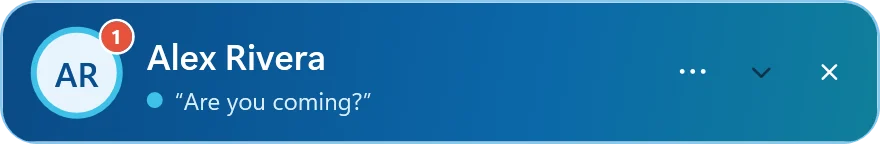
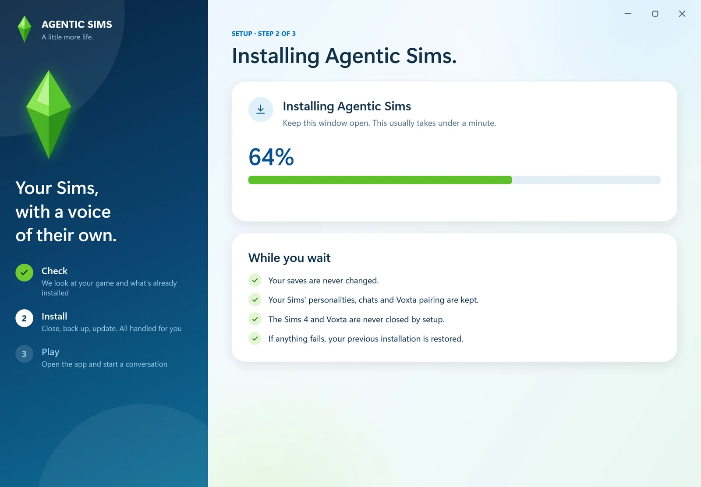

A personality from their life
Each Sim gets a Voxta character built from their age, traits and what the game has seen. Or link one you already made.
A free mod for The Sims 4 · powered by Voxta
Click a Sim, choose Live Chat, and just talk. They answer in character, notice how they feel, remember what happened, and can act on what you agree on in the game.
Pre-release test build · Windows 10 or 11 · Works with Voxta
Live Chat
A panel docks beside your game and stays out of the way. Replies stream in as the Sim types, in their own personality, aware of their mood, needs and what's happening around them.


Everything a conversation needs
Each Sim gets a Voxta character built from their age, traits and what the game has seen. Or link one you already made.
Mood, needs, wants and your relationship go into every reply. A hungry Sim might cut the chat short to eat.
"Let's play the piano" can turn into the real interaction, using what the game offers, including interactions added by your mods.
A laugh, a smile, a hug. Sims can react with small animations while you talk. Pack animations can be added too.
Write a backstory yourself and watch life chapters build up as things happen in your game. Chats pick up where you left off.
Check in on your household from your phone through Voxta: needs, plans and a quick chat, with you approving anything they do.
Mod support
Agentic Sims works with what's already in your game. It never changes or ships other mods; you install them yourself.
When a Sim agrees to do something, it picks from the interactions your game actually offers right now, including ones added by mods you've installed. Don't want one used? Switch it off in Game & preferences.
Sims can laugh, smile, flirt or hug as they talk. Animations from popular packs can be added as simple data, without touching code. Experimental.
With these installed, conversations can pick up on what the mod shows in your game. Each one is off until you switch it on, and Agentic Sims only reads what the mod displays. It's a preview feature: supporters can try it early, and it opens to everyone after its preview period.
18+ integrations need a separate switch and only apply to Sims the game confirms are adults. Mod names belong to their creators; Agentic Sims isn't affiliated with them.
Take the tour
Real screens from the game and the app. The game shots come from a test session; the app shots use a made-up household.

How it works
Save and quit The Sims 4, then extract the whole ZIP into a new folder.
It finds your game and any earlier version, backs up your settings and installs with one click.
Pair with Voxta once, start your game, click a Sim and choose Live Chat.

You'll also need The Sims 4 on a Windows PC, played windowed or in borderless mode, and Voxta running with the AI services you like. Agentic Sims connects to Voxta; Voxta does the talking. See the full setup guide.
Powered by Voxta
Agentic Sims is free, and your Sims are only as good as the AI behind them. Voxta runs that AI, and you choose where it lives.
Try it
Free
Perfect for meeting your Sims for the first time.
Get Voxta LiteBest with Agentic Sims
From $6 a month
For long sessions, more privacy and your own choice of model and voices.
See Voxta plans| Voxta Lite | Voxta subscription | |
|---|---|---|
| Live Chat, actions and gestures | Yes | Yes |
| Where your Sims' AI runs | Voxta Cloud | Your PC, Voxta Cloud, or both |
| Play without the cloud | No | Yes, after a one-time online sign-in to install |
| Conversations stay on your PC | No, they go to Voxta Cloud | Yes, with local models and voices |
| Cost of a long chat | Uses credits | Nothing extra when local |
| Models and voices | Voxta Cloud's choices | Any supported local or cloud option |
| Voxta modules (memory, vision and more) | Cloud services | All modules |
| What you need | Any Windows PC | For local AI: a recent NVIDIA GPU with enough video memory |
Prices and credit amounts are Voxta's and may change; check Voxta's plans for the latest. Agentic Sims isn't affiliated with Voxta.
Free, with early previews
The full Live Chat experience, in test.
Try new features before they open to everyone.
Download & setup guide
You need two things: Voxta, which gives your Sims their voice, and Agentic Sims, which brings Voxta into your game.
Voxta is the AI character platform that does the talking. Pick the AI models and voices you like, run them on your own PC or use Voxta Cloud, and keep your characters in one place.
One ZIP with everything included: the mod, the control center, the Live Chat panel, Python and .NET. Free, Windows 10 or 11, about 200 MB.
Supporters can try new features early, in the same download. Sign in under Connections → Preview features in the app. Every preview opens to everyone after its preview period.
Install Voxta and finish its welcome setup. The easiest start is Voxta Lite with Voxta Cloud: everything runs in the cloud, and free accounts get a monthly allowance of credits. Want it all on your PC? See Voxta setups. Leave Voxta running. How to install Voxta
Copy your saves folder somewhere safe and plan to test on a copy or a new save. Setup never closes your game for you; if it's open, setup waits and carries on by itself once you quit.
Right-click the download, choose Extract All, and extract into a new folder. Don't run anything from inside the ZIP.
It finds your game and any earlier version by itself. Click Install now and watch the progress bar. Your saves aren't touched, and script mods are switched on for you.
Windows may say it protected your PC, because the app is new and not code-signed. Choose More info → Run anyway. To double-check the download, compare it with SHA256SUMS.txt from the release.
Click Open Agentic Sims, go to Connections and choose Connect to Voxta. Copy the code it shows, select Open Voxta approval page, enter the code and approve both permissions.
Start The Sims 4 in windowed or borderless mode and load a household. Click a Sim, choose Agentic Sims → Live Chat, and say hello.
Download the new version and run its setup. It updates in place and keeps your Sims, personalities, chats and Voxta pairing.
In the Live Chat panel, open ⋯ Options and choose Reconnect to Voxta or Restart Agentic Sims. The control center's Connections page can test Voxta too.
That's what this test build is for. Note what you did and what happened; it helps get Agentic Sims ready for its public release.
Questions
No. This is a pre-release test build, shared before the first public release candidate. Some features haven't been tried in a running game yet, things can break, and updates may change how it works. Play on a copy of a save, not your main one.
A mod for The Sims 4 plus a small Windows app. The mod tells the app what's happening in your game; the app connects your Sims to Voxta, so you can talk with them and they can respond and act in the game.
The Sims 4 on Windows 10 or 11, and Voxta, a separate app that runs the AI models and voices you choose. Everything else (Python, .NET and the mod) comes in the download.
Text generation is the only one you need. It writes your Sims' replies and chooses their actions and gestures, so leave action inference on its default (handled by text generation). Text-to-speech is recommended so you can hear them. Speech-to-text (talking instead of typing) and Memory are optional. Voxta Lite with Voxta Cloud covers all of these with no local setup.
Keep Voxta Cloud's default model. It's a high-quality general-purpose model that Voxta tunes over time, and it handles conversation and action choices well. If you switch, pick one that's good at following instructions: very small models often miss actions and gestures, and bigger models cost more credits per reply. For voices, UnrealSpeech is the cheapest, Cartesia the most responsive, and ElevenLabs the most expressive. Prefer running everything on your own PC? Voxta also supports local models and local voices if you have a capable GPU. Voxta Cloud guide
Yes, with a Voxta subscription. Agentic Sims itself always runs on your PC. A subscription unlocks the full Voxta Server, so the AI model, voices and speech recognition can run on your PC too. Voxta needs an online sign-in to install its features; after that, every service can run locally, with nothing sent to the cloud and no credits used. Local AI needs a recent NVIDIA GPU with enough video memory.
Yes. There's one free download with no limits on chats, Sims or households and no pop-ups. Some new features start as previews that Patreon supporters can try early; each one opens to everyone after its preview period.
Setup never edits your saves, backs up your settings and puts everything back if an install fails. But this is an untested build that changes what Sims do in game, so a save you play with it could end up in a state you don't want. Back up your saves first and test on a copy or a new save.
Use windowed or borderless mode. The Live Chat panel is a separate window that sits beside your game, so exclusive fullscreen isn't supported.
Agentic Sims runs on your own PC and talks only to your Voxta. Voxta then uses whichever AI services you've set up there; if those are online services, they receive the conversation and the game details that go with it.
Sims can use the interactions your game offers, including ones added by other mods, and you can switch any interaction off. Agentic Sims can also read extra context from some popular gameplay mods. That's a preview feature right now, off by default and still being tested. See mod support for the full list.
Yes, with Independent Sims: Sims you pick on the current lot make their own choices at a relaxed pace. You decide who, and you can switch it off at any time. It's a preview feature right now that supporters can try early, and it opens to everyone after its preview period.
To update, run the new setup: it updates in place and keeps your Sims, personalities, chats and Voxta pairing. To remove it, close the app, delete the VoxtaSims folder in your game's Mods folder and delete the Agentic Sims folder.
No. Agentic Sims is an unofficial fan-made mod. It isn't made, endorsed or supported by Electronic Arts, Maxis or Voxta.
Free to try. Still a test build, so bring a spare save.